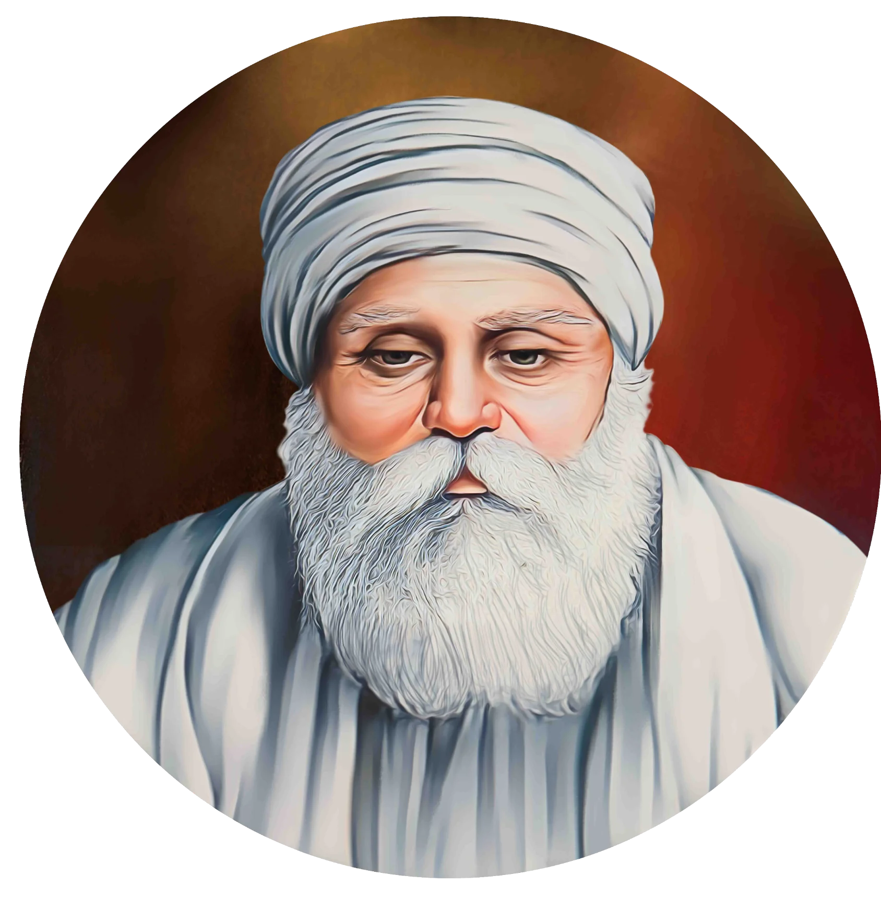

ਗੁਰੂ ਅਮਰ ਦਾਸ ਜੀ


ਸਿਰਲੇਖ: ਗੁਰੂ ਅਮਰ ਦਾਸ ਜੀ
ਸ਼੍ਰੇਣੀ: ਧਾਰਮਿਕ ਕੋਨਾ
ਕਲਾਕਾਰ: ਇਤਿਹਾਸਕ ਸ਼ਖਸੀਅਤ
ਸਾਲ: 1479 – 1574
ਸ਼੍ਰੇਣੀ: ਧਾਰਮਿਕ ਕੋਨਾ
ਕਲਾਕਾਰ: ਇਤਿਹਾਸਕ ਸ਼ਖਸੀਅਤ
ਸਾਲ: 1479 – 1574
ਗੁਰੂ ਅਮਰ ਦਾਸ ਜੀ
ਤੀਜੇ ਸਿੱਖ ਗੁਰੂ, ਸ੍ਰੀ ਗੁਰੂ ਅਮਰ ਦਾਸ ਜੀ ਦਾ ਪ੍ਰਕਾਸ਼ 5 ਮਈ 1479 ਨੂੰ ਅੰਮ੍ਰਿਤਸਰ ਨੇੜੇ ਬਾਸਰਕੇ ਗਿੱਲਾਂ ਵਿਖੇ ਤੇਜ ਭਾਨ ਜੀ ਅਤੇ ਮਾਤਾ ਲਖਮੀ ਜੀ ਦੇ ਗ੍ਰਹਿ ਵਿਖੇ ਹੋਇਆ। 73 ਸਾਲ ਦੀ ਬਜ਼ੁਰਗ ਉਮਰ ਵਿੱਚ 12 ਸਾਲਾਂ ਦੀ ਅਣਥੱਕ ਨਿਸ਼ਕਾਮ ਸੇਵਾ ਮਗਰੋਂ ਆਪ ਜੀ ਗੁਰਗੱਦੀ 'ਤੇ ਬਿਰਾਜਮਾਨ ਹੋਏ। ਆਪ ਜੀ ਨੇ ਬਿਆਸ ਦਰਿਆ ਦੇ ਕੰਢੇ ਗੋਇੰਦਵਾਲ ਸਾਹਿਬ ਨੂੰ ਸਿੱਖੀ ਦਾ ਮਹਾਨ ਅਧਿਆਤਮਿਕ ਕੇਂਦਰ ਬਣਾਇਆ, ਜਿੱਥੇ 84 ਪੌੜੀਆਂ ਵਾਲੀ ਪਵਿੱਤਰ ਬਾਉਲੀ ਸਾਹਿਬ ਦੀ ਉਸਾਰੀ ਕਰਵਾਈ।
ਗੁਰੂ ਅਮਰ ਦਾਸ ਜੀ ਨੇ 'ਪਹਿਲੇ ਪੰਗਤ, ਪਾਛੈ ਸੰਗਤ' ਦਾ ਇਤਿਹਾਸਕ ਨਿਯਮ ਲਾਗੂ ਕੀਤਾ, ਜਿਸ ਅਨੁਸਾਰ ਗੁਰੂ ਦਰਸ਼ਨ ਤੋਂ ਪਹਿਲਾਂ ਹਰ ਕਿਸੇ ਲਈ ਲੰਗਰ ਵਿੱਚ ਬੈਠ ਕੇ ਪ੍ਰਸ਼ਾਦਾ ਛਕਣਾ ਲਾਜ਼ਮੀ ਸੀ। 1567 ਵਿੱਚ ਜਦੋਂ ਮੁਗ਼ਲ ਬਾਦਸ਼ਾਹ ਅਕਬਰ ਗੋਇੰਦਵਾਲ ਆਇਆ, ਤਾਂ ਉਸ ਨੇ ਵੀ ਪੰਗਤ ਵਿੱਚ ਬੈਠ ਕੇ ਲੰਗਰ ਛਕਿਆ। ਗੁਰੂ ਜੀ ਨੇ ਜਾਤ-ਪਾਤ, ਛੂਤ-ਛਾਤ, ਸਤੀ ਪ੍ਰਥਾ ਅਤੇ ਪਰਦਾ ਪ੍ਰਥਾ ਦਾ ਕਰੜਾ ਵਿਰੋਧ ਕੀਤਾ ਅਤੇ ਵਿਧਵਾ ਵਿਆਹ ਨੂੰ ਉਤਸ਼ਾਹਿਤ ਕੀਤਾ। ਸਿੱਖ ਧਰਮ ਦੇ ਪ੍ਰਚਾਰ ਲਈ ਆਪ ਜੀ ਨੇ 22 ਮੰਜੀਆਂ (ਪ੍ਰਚਾਰ ਕੇਂਦਰ) ਸਥਾਪਿਤ ਕੀਤੀਆਂ ਅਤੇ ਅੰਮ੍ਰਿਤਸਰ ਸਰੋਵਰ ਦਾ ਮੁੱਢਲਾ ਖਾਕਾ ਤਿਆਰ ਕੀਤਾ। ਆਪ ਜੀ ਨੇ ਭਾਈ ਜੇਠਾ ਜੀ (ਗੁਰੂ ਰਾਮ ਦਾਸ ਜੀ) ਨੂੰ ਚੌਥਾ ਗੁਰੂ ਥਾਪਿਆ ਅਤੇ 1 ਸਤੰਬਰ 1574 ਨੂੰ 95 ਸਾਲ ਦੀ ਉਮਰ ਵਿੱਚ ਜੋਤੀ-ਜੋਤਿ ਸਮਾ ਗਏ।
'ਘੋਰ ਅੰਧਕਾਰ ਦੇ ਯੁੱਗ ਵਿੱਚ ਉਹ ਸੂਰਜ ਵਾਂਗ ਪ੍ਰਗਟ ਹੋਏ; ਉਨ੍ਹਾਂ ਨੇ ਸੱਚ ਦਾ ਬੀਜ ਬੀਜਿਆ ਅਤੇ ਉਸ ਦਾ ਅੰਮ੍ਰਿਤ ਫਲ ਪ੍ਰਾਪਤ ਕੀਤਾ।'
— ਆਦਿ ਗ੍ਰੰਥ
ਤੀਜੇ ਸਿੱਖ ਗੁਰੂ, ਸ੍ਰੀ ਗੁਰੂ ਅਮਰ ਦਾਸ ਜੀ ਦਾ ਪ੍ਰਕਾਸ਼ 5 ਮਈ 1479 ਨੂੰ ਅੰਮ੍ਰਿਤਸਰ ਨੇੜੇ ਬਾਸਰਕੇ ਗਿੱਲਾਂ ਵਿਖੇ ਤੇਜ ਭਾਨ ਜੀ ਅਤੇ ਮਾਤਾ ਲਖਮੀ ਜੀ ਦੇ ਗ੍ਰਹਿ ਵਿਖੇ ਹੋਇਆ। 73 ਸਾਲ ਦੀ ਬਜ਼ੁਰਗ ਉਮਰ ਵਿੱਚ 12 ਸਾਲਾਂ ਦੀ ਅਣਥੱਕ ਨਿਸ਼ਕਾਮ ਸੇਵਾ ਮਗਰੋਂ ਆਪ ਜੀ ਗੁਰਗੱਦੀ 'ਤੇ ਬਿਰਾਜਮਾਨ ਹੋਏ। ਆਪ ਜੀ ਨੇ ਬਿਆਸ ਦਰਿਆ ਦੇ ਕੰਢੇ ਗੋਇੰਦਵਾਲ ਸਾਹਿਬ ਨੂੰ ਸਿੱਖੀ ਦਾ ਮਹਾਨ ਅਧਿਆਤਮਿਕ ਕੇਂਦਰ ਬਣਾਇਆ, ਜਿੱਥੇ 84 ਪੌੜੀਆਂ ਵਾਲੀ ਪਵਿੱਤਰ ਬਾਉਲੀ ਸਾਹਿਬ ਦੀ ਉਸਾਰੀ ਕਰਵਾਈ।
ਗੁਰੂ ਅਮਰ ਦਾਸ ਜੀ ਨੇ 'ਪਹਿਲੇ ਪੰਗਤ, ਪਾਛੈ ਸੰਗਤ' ਦਾ ਇਤਿਹਾਸਕ ਨਿਯਮ ਲਾਗੂ ਕੀਤਾ, ਜਿਸ ਅਨੁਸਾਰ ਗੁਰੂ ਦਰਸ਼ਨ ਤੋਂ ਪਹਿਲਾਂ ਹਰ ਕਿਸੇ ਲਈ ਲੰਗਰ ਵਿੱਚ ਬੈਠ ਕੇ ਪ੍ਰਸ਼ਾਦਾ ਛਕਣਾ ਲਾਜ਼ਮੀ ਸੀ। 1567 ਵਿੱਚ ਜਦੋਂ ਮੁਗ਼ਲ ਬਾਦਸ਼ਾਹ ਅਕਬਰ ਗੋਇੰਦਵਾਲ ਆਇਆ, ਤਾਂ ਉਸ ਨੇ ਵੀ ਪੰਗਤ ਵਿੱਚ ਬੈਠ ਕੇ ਲੰਗਰ ਛਕਿਆ। ਗੁਰੂ ਜੀ ਨੇ ਜਾਤ-ਪਾਤ, ਛੂਤ-ਛਾਤ, ਸਤੀ ਪ੍ਰਥਾ ਅਤੇ ਪਰਦਾ ਪ੍ਰਥਾ ਦਾ ਕਰੜਾ ਵਿਰੋਧ ਕੀਤਾ ਅਤੇ ਵਿਧਵਾ ਵਿਆਹ ਨੂੰ ਉਤਸ਼ਾਹਿਤ ਕੀਤਾ। ਸਿੱਖ ਧਰਮ ਦੇ ਪ੍ਰਚਾਰ ਲਈ ਆਪ ਜੀ ਨੇ 22 ਮੰਜੀਆਂ (ਪ੍ਰਚਾਰ ਕੇਂਦਰ) ਸਥਾਪਿਤ ਕੀਤੀਆਂ ਅਤੇ ਅੰਮ੍ਰਿਤਸਰ ਸਰੋਵਰ ਦਾ ਮੁੱਢਲਾ ਖਾਕਾ ਤਿਆਰ ਕੀਤਾ। ਆਪ ਜੀ ਨੇ ਭਾਈ ਜੇਠਾ ਜੀ (ਗੁਰੂ ਰਾਮ ਦਾਸ ਜੀ) ਨੂੰ ਚੌਥਾ ਗੁਰੂ ਥਾਪਿਆ ਅਤੇ 1 ਸਤੰਬਰ 1574 ਨੂੰ 95 ਸਾਲ ਦੀ ਉਮਰ ਵਿੱਚ ਜੋਤੀ-ਜੋਤਿ ਸਮਾ ਗਏ।
'ਘੋਰ ਅੰਧਕਾਰ ਦੇ ਯੁੱਗ ਵਿੱਚ ਉਹ ਸੂਰਜ ਵਾਂਗ ਪ੍ਰਗਟ ਹੋਏ; ਉਨ੍ਹਾਂ ਨੇ ਸੱਚ ਦਾ ਬੀਜ ਬੀਜਿਆ ਅਤੇ ਉਸ ਦਾ ਅੰਮ੍ਰਿਤ ਫਲ ਪ੍ਰਾਪਤ ਕੀਤਾ।'
— ਆਦਿ ਗ੍ਰੰਥ

ਮੋਬਾਈਲ 'ਤੇ ਖੋਲ੍ਹੋ
ਆਪਣੇ ਫ਼ੋਨ 'ਤੇ ਇਸ ਕਲਾ ਰਿਕਾਰਡ ਨੂੰ ਦੇਖਣ ਲਈ ਸਕੈਨ ਕਰੋ।